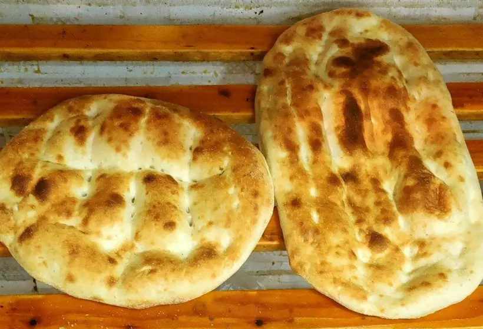
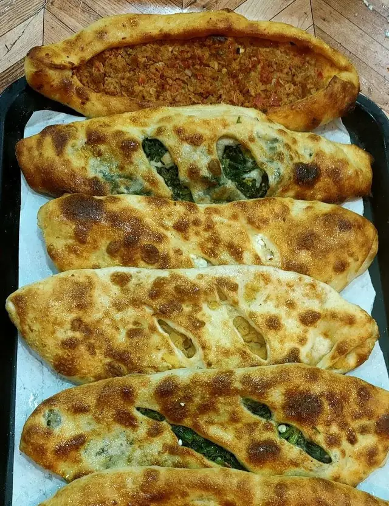
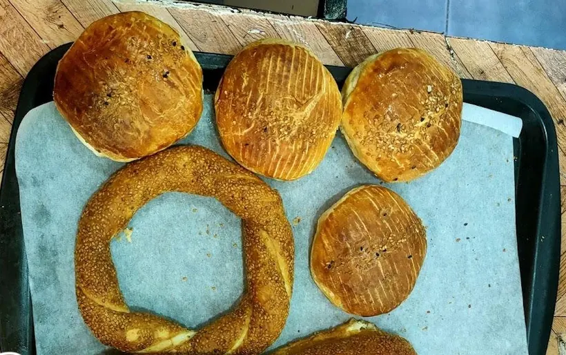
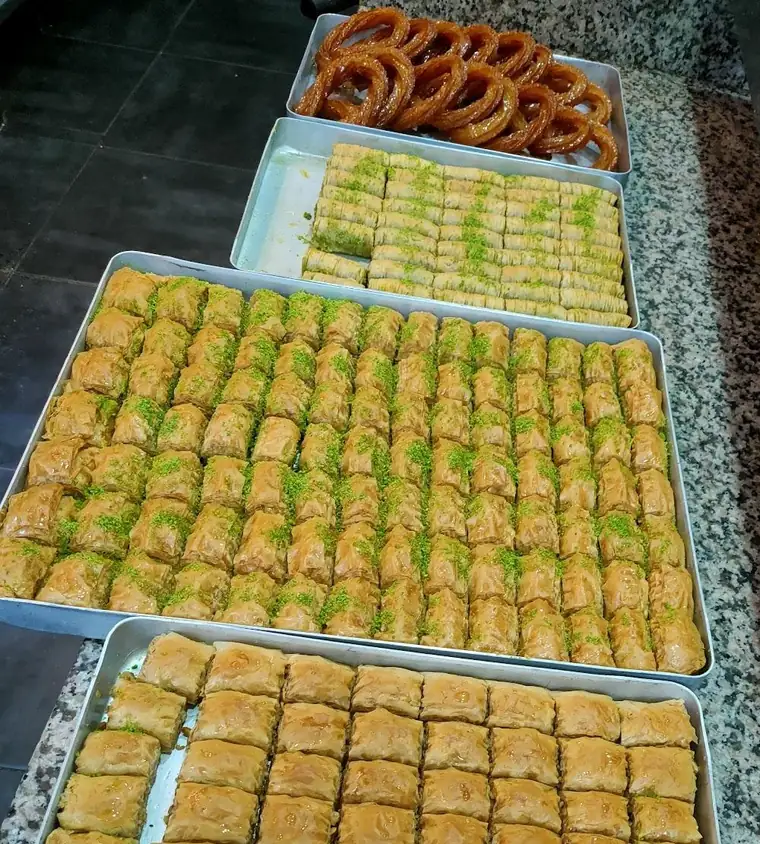
Het broodrek van het Oude Noorden
Turks brood, pide, simit en baklava van de Turkse buurtbakkerij aan de Benthuizerstraat 80B. Kijk wat er op het rek ligt en vraag het even na.
Wat er op de latten ligt
Foto's uit de bakkerij zelf. Zie je iets liggen? Tik op Vraag ernaar, dan staat het meteen in je bericht.
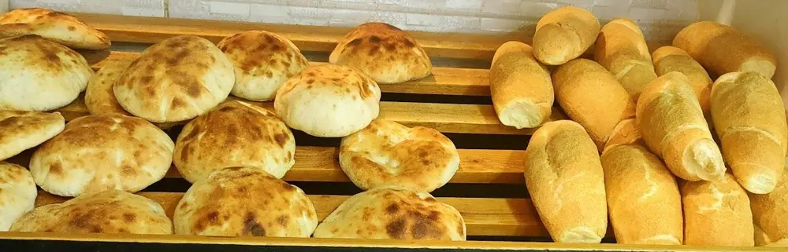
Rond brood en stokbrood
Vraag ernaar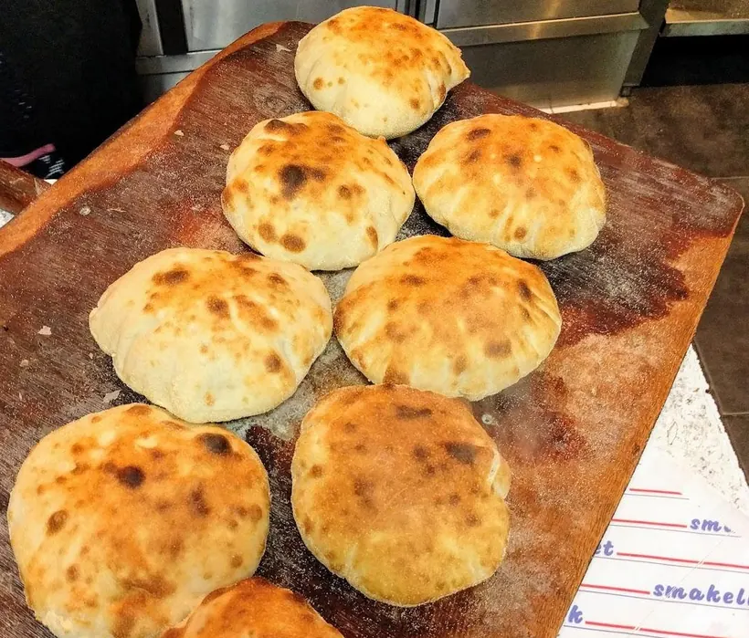
Op de houten schep
Vraag ernaar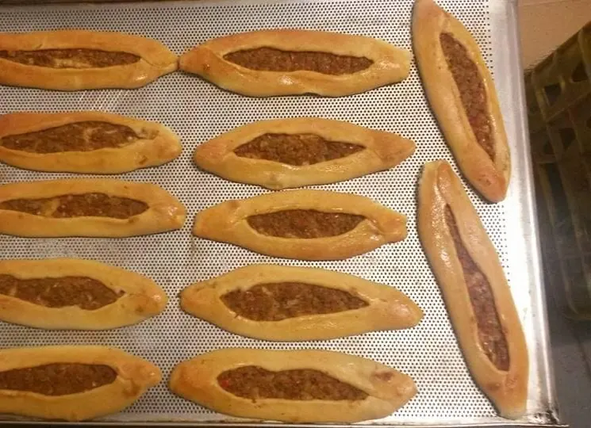
Pide met gehakt
Vraag ernaar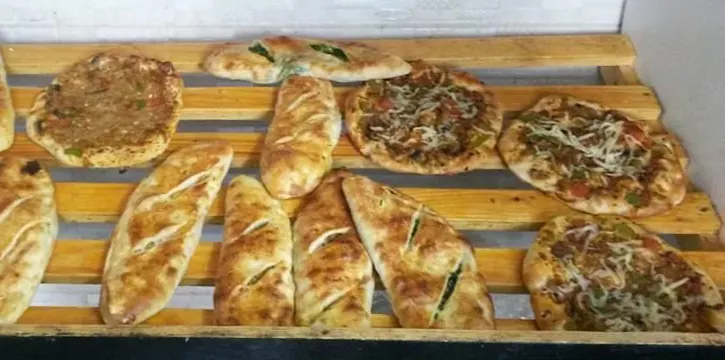
Pide en pizza
Vraag ernaar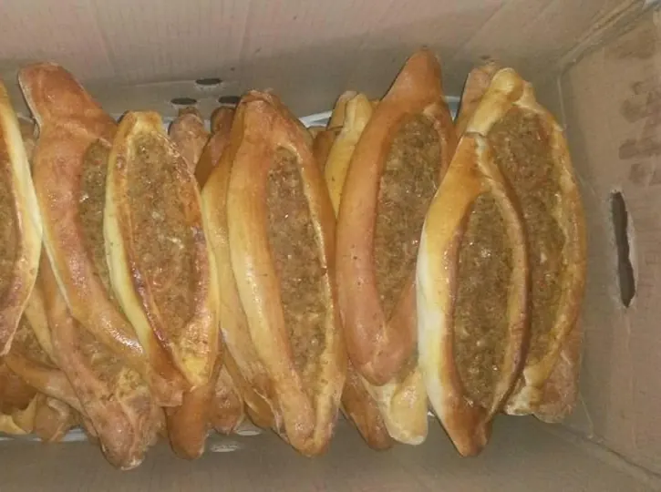
Een doos vol pide
Vraag ernaar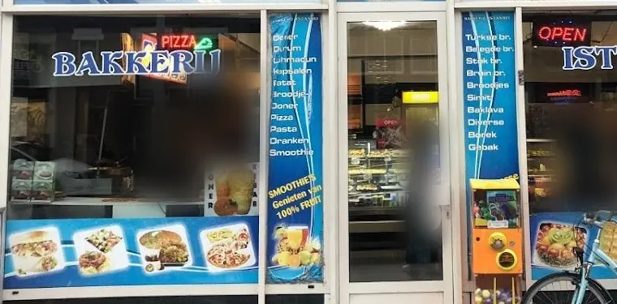
Op de ruit
Dit staat er op de etalage aan de Benthuizerstraat:
En ook warm:
Foto's: Facebookpagina van Bakkerij Istanbul en Google Maps (via Restaurant Guru). Wat er vandaag ligt, verschilt; vraag het gerust even.
Stel je vraag in drie tikken
Kies wat je zoekt, hoeveel en voor wanneer. Je appje staat klaar; je stuurt het zelf.
Je appje aan Bakkerij Istanbul
Stuur via WhatsAppGaat naar 06 54 75 10 43. Liever even bellen? Bel de bakkerij.
Brood, broodjes en een warm welkom
Klanten noemen het brood het lekkerste van de stad
Een klant schreef het letterlijk zo op. In andere reviews gaat het over vers brood en gevulde pides.
Klanten noemen de broodjes lekker en betaalbaar
Dat schrijven klanten in de Google-reviews: lekkere belegde broodjes voor een vriendelijke prijs.
Twee eigenaren achter de toonbank
De wijksite van het Oude Noorden spreekt van "twee hele aardige eigenaren", en reviewers noemen het stel hartelijk.
Over de bakker gezegd
Lekkerste brood van de stad.
Adam, review via Restaurant Guru
Zena en Dwizzy: samengevat uit reviews op Google, niet letterlijk geciteerd.
Van het rek naar je tas
- Kijk wat er ligtBrood, pide, simit, baklava: alles staat hierboven in het rek.
- App of bel evenJe vraag staat klaar in de kiezer, of bel 06 54 75 10 43.
- Loop binnen op 80BBenthuizerstraat 80B, in het Oude Noorden.
Vragen aan de toonbank
Wat kan ik er halen?
Op de etalage staan onder meer Turks brood, belegde broodjes, stokbrood, bruin brood, simit, baklava, börek en gebak, en daarnaast döner, dürüm, lahmacun, pizza, pasta en smoothies. Wat er vandaag ligt, verschilt: vraag het even.
Wanneer is de bakkerij open?
Volgens Restaurant Guru van maandag tot en met zaterdag van 08:00 tot 18:00, en op zondag dicht. Wil je het zeker weten? Bel even: 06 54 75 10 43.
Ligt iets er niet?
Een klant schreef dat de bakker soms iets op verzoek bakt. Vraag het gerust via de kiezer of de telefoon.
Kan ik een grotere hoeveelheid navragen?
Ja. Vink in de kiezer "een grote hoeveelheid" aan, kies de dag en stuur je vraag. Zo weet de bakkerij meteen om hoeveel en welke dag het gaat.
Waar zit de bakkerij precies?
Benthuizerstraat 80B, 3036 CL Rotterdam, in het Oude Noorden.
Aan de Benthuizerstraat
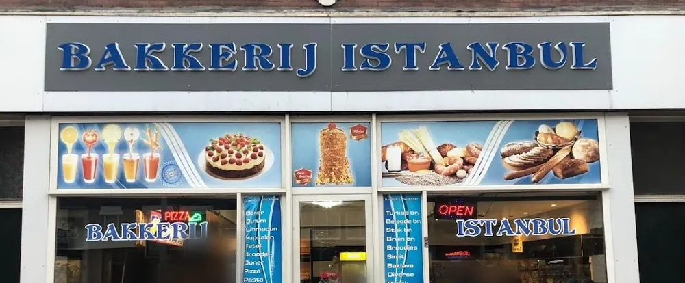
Benthuizerstraat 80B
3036 CL Rotterdam
| Maandag t/m zaterdag | 08:00–18:00 |
| Zondag | gesloten |
Volgens Restaurant Guru. Even bellen om zeker te zijn kan altijd.
Iets lekkers voor straks?
Stuur de bakkerij een appje of bel even. Het adres: Benthuizerstraat 80B.